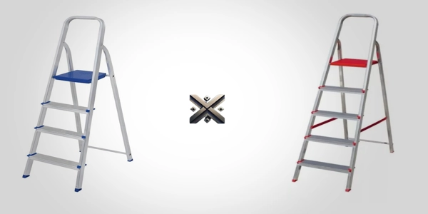

Escolher a escada certa faz toda a diferença nas tarefas do dia a dia. Entre as opções mais populares do mercado estão a Escada MOR 4 Degraus de 4 degraus e os modelos da Botafogo Lar & Lazer, que vão de 2 a 9 degraus. Ambas são práticas, seguras e ideais para uso doméstico, mas têm características distintas.
Se está na dúvida entre a Escada MOR 4 Degraus e a Botafogo, saiba que as duas estão entre as mais vendidas e são ótimas aliadas nas tarefas do dia a dia. Neste artigo, colocamos as duas lado a lado para você escolher com segurança a melhor opção para sua casa.

Ter uma escada em casa vai além da praticidade: é uma escolha que também contribui para a segurança nas tarefas cotidianas. Modelos como a MOR 5102 de 4 degraus e as escadas da Botafogo Lar & Lazer se destacam por oferecer soluções eficientes para atividades simples como trocar uma lâmpada, alcançar armários altos ou limpar janelas.
A Escada MOR 5102 combina leveza e estabilidade, com 4 degraus e um patamar superior que alcança cerca de 1,42m de altura útil. Já a Botafogo oferece mais versatilidade, com modelos de 2 até 9 degraus, adaptando-se às mais diversas necessidades. Ambas são dobráveis, fáceis de guardar e contam com pés antiderrapantes, garantindo firmeza durante o uso. Ter uma dessas escadas em casa é investir em autonomia, conforto e segurança para as tarefas do dia a dia.
Escada MOR 4 Degraus: Faixa de preço entre R$160,00 e R$200,00.
Escada Botafogo: Preços variam de R$162,90 até R$238,90.
Ambas estão em faixas semelhantes. Avalie promoções e condições de pagamento no momento da compra.
MOR 4 Degraus: Modelo com 4 degraus e um patamar, com altura útil de 1,42m. A MOR também oferece outros modelos, geralmente com até 5 degraus.
Botafogo: O modelo analisado conta com 5 degraus e alcança 1,06m de altura útil, mas a linha doméstica da marca inclui versões que vão de 2 a 9 degraus.
Se você precisa alcançar locais mais altos, a escada MOR 4 Degraus oferece maior alcance neste comparativo. Já a Botafogo é ideal para quem busca mais variedade de alturas.
Escada MOR: Conta com pés antiderrapantes e patamar reforçado.
Escada Botafogo: Possui degraus largos e emborrachados, garantindo conforto e segurança adicional.
Ambas são seguras, mas a Botafogo oferece mais conforto para uso contínuo.
As duas escadas são leves, com cerca de 3 kg, e fáceis de guardar mesmo em espaços menores. Boa escolha para quem vive em apartamento ou precisa de mobilidade.
MOR: É conhecida por seu excelente custo-benefício e escadas compactas, ideais para quem busca praticidade.
Botafogo: A marca é tradicional no setor, com foco em segurança e estabilidade. Seus degraus são um destaque importante para quem quer segurança máxima.
As duas marcas oferecem produtos com certificação e boa reputação no mercado, mas a escolha ideal vai depender das suas necessidades e do tipo de uso no dia a dia.
Essas escadas estão disponíveis em lojas de materiais para construção e também em sites especializados em produtos domésticos. Dê preferência a sites que disponibilizam avaliações de compradores, entregas seguras e garantia do produto.
Busque em marketplaces confiáveis e compare preços antes de fechar a compra. Antes de concluir a compra, verifique se o item é original, possui o selo do INMETRO e está acompanhado da nota fiscal — isso garante qualidade e segurança.
A decisão entre a escada MOR 4 Degraus e a escada Botafogo de alumínio deve considerar suas necessidades específicas:
Escolher uma escada doméstica confiável e funcional é essencial para realizar atividades diárias com mais praticidade e sem imprevistos. Seja qual for sua escolha, opte por produtos certificados e com boa reputação entre os usuários.